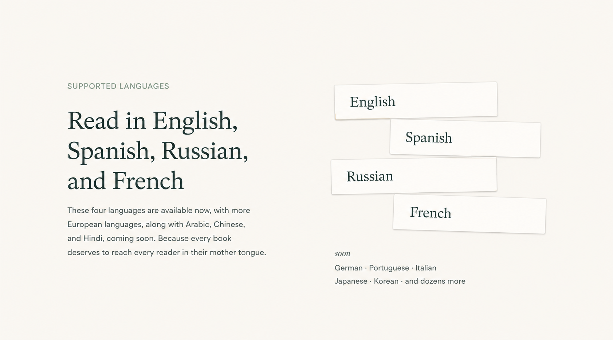
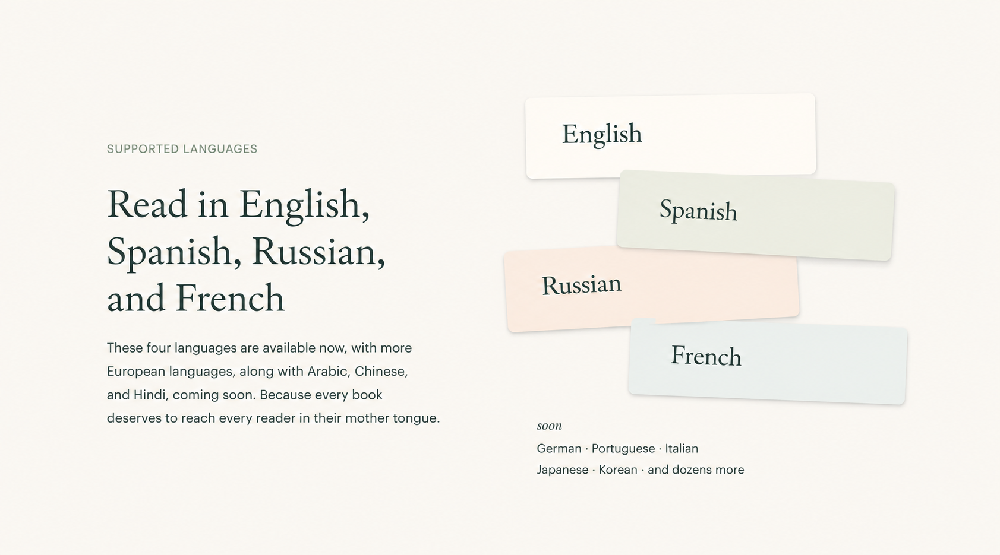
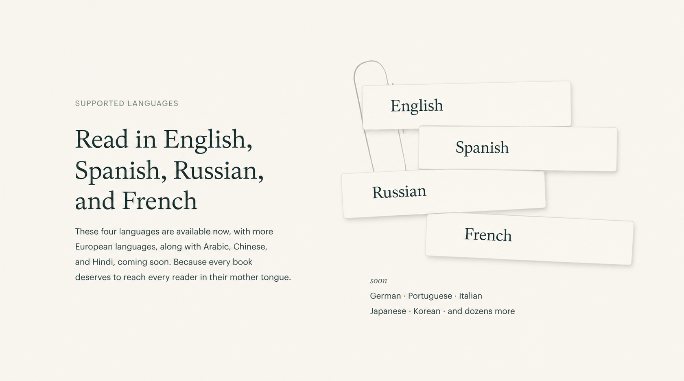
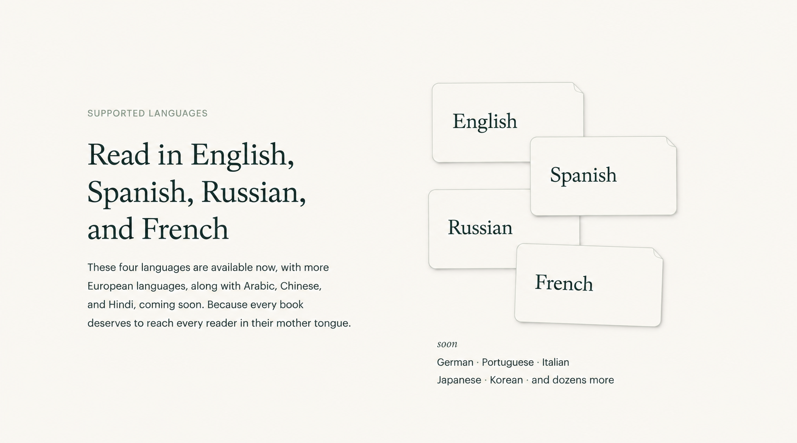

Contemporary card studies · 06 September 2026
One direction.
Five new studies.
The user preferred the staggered Manuscript slips composition. This round explores five contemporary variations: lighter surfaces, considered spacing and restrained details, including decoration on the cards and a lightweight object behind them.
The preferred starting point
Manuscript slips · the user-supplied reference for this round

Keep the staggered composition while moving away from vintage paper treatment. This image records the preferred direction, not approval to ship its pixels or generated copy.
Variant 01
Generated composition study

Study 01 in this round’s display order. Evaluate the composition alongside the reference and the other four studies.
Variant 02
Generated composition study

Study 02 in this round’s display order. Evaluate the composition alongside the reference and the other four studies.
Variant 03
Generated composition study

Study 03 in this round’s display order. Evaluate the composition alongside the reference and the other four studies.
Variant 04
Generated composition study

Study 04 in this round’s display order. Evaluate the composition alongside the reference and the other four studies.
Variant 05
Generated composition study

Study 05 in this round’s display order. Evaluate the composition alongside the reference and the other four studies.